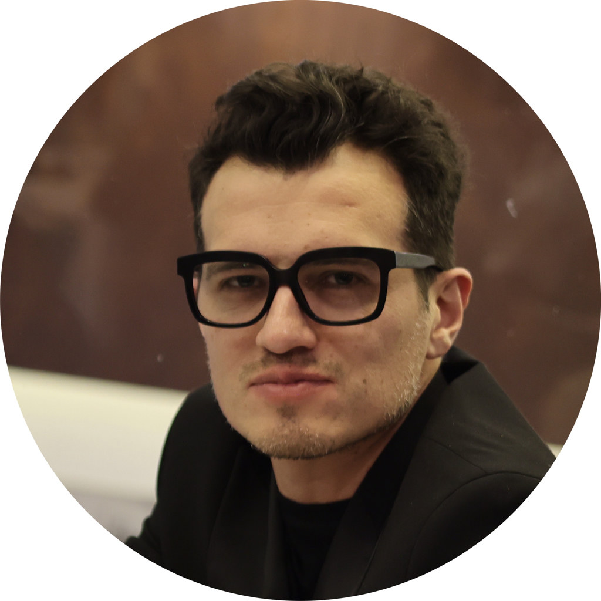
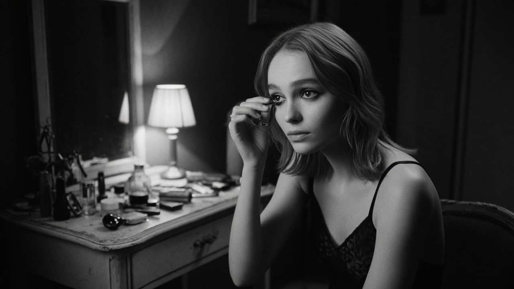
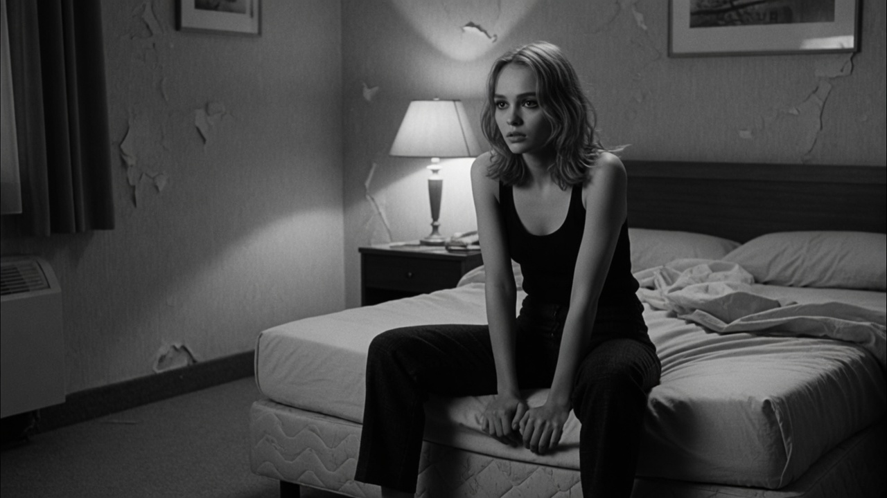
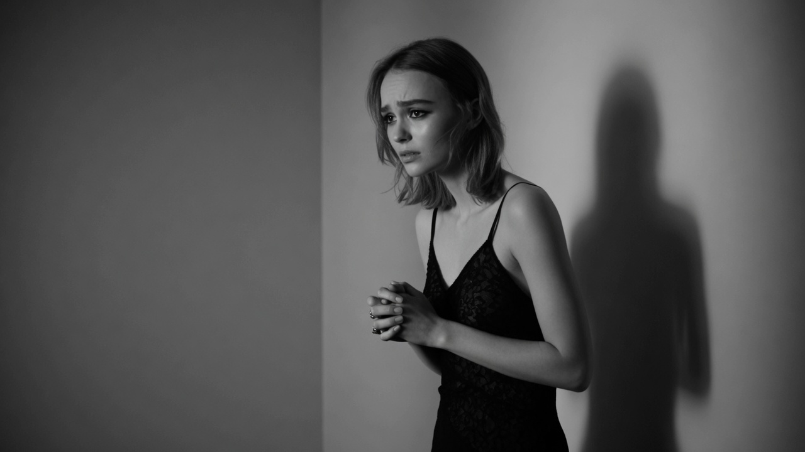
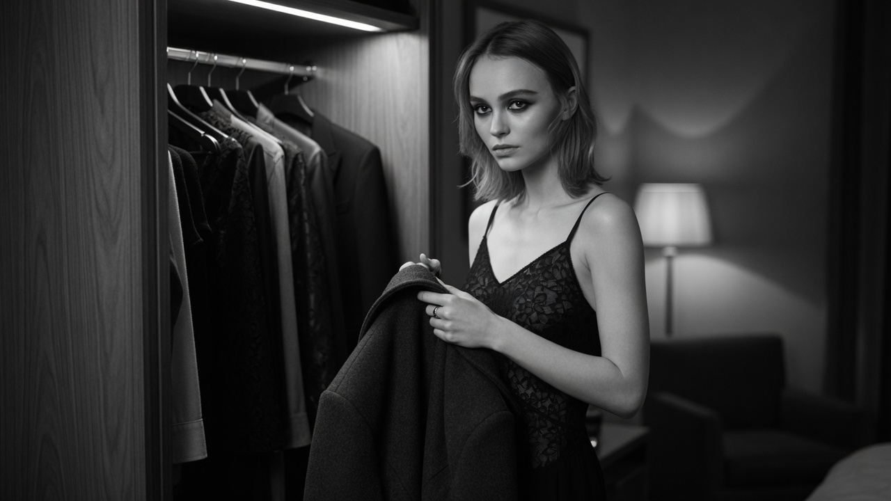
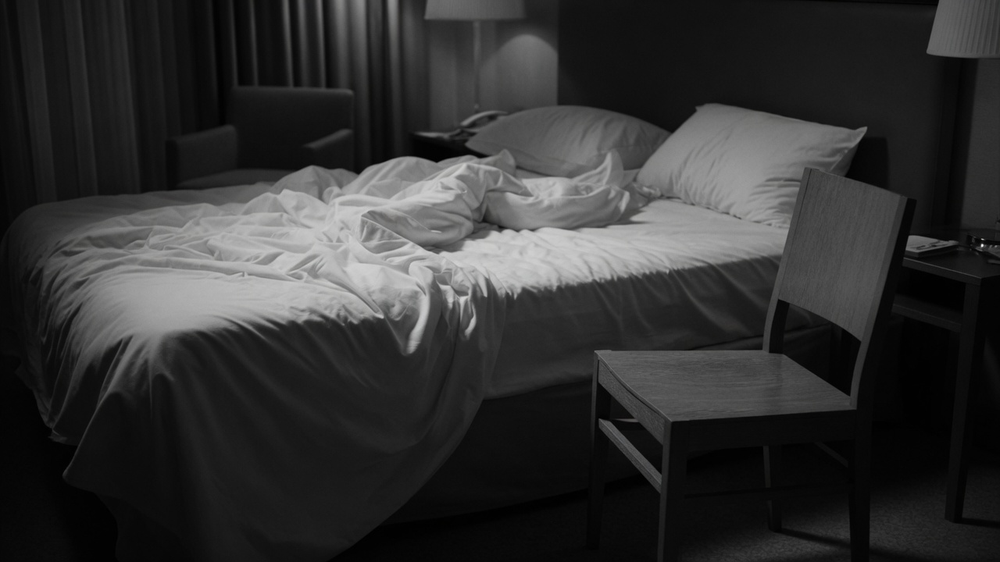

Olivia Rodrigo — GUTS
Analysis of typography and motion in the animated Apple Music album cover.
Senior Copywriter · Film & Image
Copywriter & producer — Canal+ (Déjà Vu, Séries Entre Potes, La Scène). Since 2012, I have been conceiving and producing visual stories for media, cultural institutions and international brands.
Canal+ festival coverage & special editions · Cannes 2021 · Berlinale 2022 · Mostra 2023 · Deauville 2024 · tribute video César Awards 2019 (Robert Redford)

Formats 9:16 · Mobile First & Fashion Essays
Pop-culture analysis, album-cover breakdowns and fashion narratives, adapted to vertical 9:16.
Analysis of typography and motion in the animated Apple Music album cover.
A visual breakdown of Miu Miu’s aesthetic and the House’s cinematic parallels.
A study of visual rhymes, cinematic parallels and visual symbolism.
Selection — Déjà Vu
The Déjà Vu format (Canal+) — 6 seasons, 87 standard episodes (+ 18 festival editions). Concept and original music: César Cabrera (Extended Void).
Visual parallels around the film Eiffel — iconographic research and editorial edit for Canal+ Cinéma.
Analysis and visual parallels between runway haute couture and the elegance of silhouettes on the Cannes Film Festival red carpet — festival coverage edition (Cannes 2021).
Original compositions, sonic textures and audio branding for Canal+ editorial formats, series and creative projects.
Development of programme bibles, prototypes for cultural shows and 360° stream formats, created and produced in-house.
Personal concept · Spec
A bedroom, a wait, an understated bottle, an emptiness. No voice-over. No brand super. The fragrance is not a packshot: it is a trace. Storyboard + animatic stills — the standard stage before committing to a shoot.
Animatic stills · FFmpeg hard cuts · 70″ of shots + 5″ end-credits fade · Download MP4
Production notes: hand-sized bottle only · blank glass · 2 beats max · no logo · animatic stills = deliverable ahead of executive producer / quote / shoot. Possible 360° adaptations (16:9 hero · 9:16 stories) after creative lock.
Storyboard — 10 shots
Image lock: 16:9 · black and white · psychological hotel room · locked-off camera · silence · one understated, unbranded bottle. Shot 10 = end credits “César Cabrera” on black (no phone image).






Detailed shot sheet
Shot 01 · TC 00:00–00:07 · 7″ · ROOM
Shot 02 · TC 00:07–00:13 · 6″ · WAIT
Shot 03 · TC 00:13–00:18 · 5″ · GESTURE
Shot 04 · TC 00:18–00:26 · 8″ · GESTURE
Shot 05 · TC 00:26–00:34 · 8″ · TRACE
Shot 06 · TC 00:34–00:40 · 6″ · SEEN
Shot 07 · TC 00:40–00:48 · 8″ · WAIT
Shot 08 · TC 00:48–00:56 · 8″ · TRACE
Shot 09 · TC 00:56–01:04 · 8″ · AFTER
Shot 10 · TC 01:04–01:10 · 6″ · HOLD / END CREDITS
Profile
Scripts, screenplays, tone of voice, art direction, executive production — advertising films, digital, social — for the role of Senior Copywriter, Film & Image (Fragrance & Beauty).
Curriculum vitae · tailored to the role
Senior Copywriter — Film & Image · Brand storytelling & 360° campaigns
+33 6 02 08 16 48
·
extendedvoid.prod@gmail.com
134 rue du Renard, 76000 Rouen · Available in Paris / Neuilly-sur-Seine
Senior film & image copywriter — visual storytelling and campaign concepts for premium media and international brands. Reads the brief for what is really at stake and develops original concepts that scale across 360° communication (TV, cinema, digital, print, CRM, social media). Scripts and screenplays for advertising films and digital content; consistent tone of voice across editorial teams and Creative Direction. Strong grasp of digital channels and the production stages of a visual campaign (storyboard, animatic, film). Humble, collaborative, cross-disciplinary.
Aligned with the permanent role — Senior Copywriter, Film & Image · Fragrance & Beauty · Neuilly-sur-Seine
CV tailored for a senior film & image copywriter role (Fragrance & Beauty) — prioritising visual storytelling, 360°, tone of voice; no software-engineer angle.
Application · France Travail
Texts aligned with this one-pager (Absence, verified festivals, keywords from the job listing).
To paste into the France Travail fields or attach as a .txt file. The documents themselves are in French.
Job listing no. 4406638 — Permanent role, Senior Copywriter Film & Image · Fragrance & Beauty.
Same content as the web CV + the job listing’s keywords in plain text (ATS parser / France Travail free-text fields).
A more personal, conversational tone (why this role), in the House style: precise, humble, free of tech jargon. “Absence” portfolio up to date.
Case study “Absence” · ATS CV · cover letter · personal concept · Fragrance & Beauty spec.
extendedvoid.prod@gmail.com CV PDF (French) Copy ATSAwesome Master Catalog · Archives 2012–2026
A structured catalogue of creations, TV formats, viral essays and sound compositions by César Cabrera (AKA Extended Void / Candice Drouet).